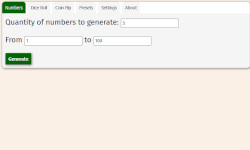
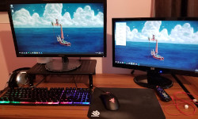

This website
HTML · CSS
The site you're reading right now was made with basic HTML and CSS! While I could have used a website maker (which I have used for resumes in the past), making one from scratch sounded more interesting and more fun. Since this is a basic document, I decided not to use any JavaScript or front-end libraries to keep the site simple and snappy. This site also uses royalty-free images from Pixabay and the Open Sans and Roboto fonts. The footer icons are from Font Awesome.
Source codeRNG Machine
HTML · CSS · JavaScript

A random number generator that runs in browser (or desktop with Electron). While it is a standard number generator, the UI is much cleaner than most of the web-based generators that I’ve used.
Source codeGeneric Stream Counter
C#
This program outputs a text file to let the user make an on-screen counter in OBS such as for deaths or resets. I found it to be a much easier and quicker solution than manually changing the text each time. The image to the left is the logo I designed for it.
Source codeBuilt a custom PC
Ryzen 2600x · RX 580 · 32GB DDR4 RAM

While I mostly focus on software, I can also work with hardware pretty well. Overall, I’m really happy with this build. It's been a few years, so I could use a better GPU, but it runs most games I play really well. Even at 1440p.